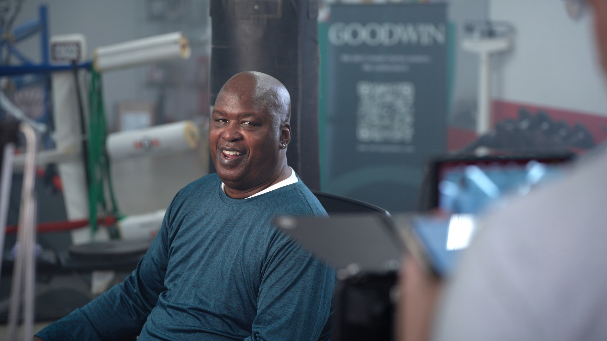
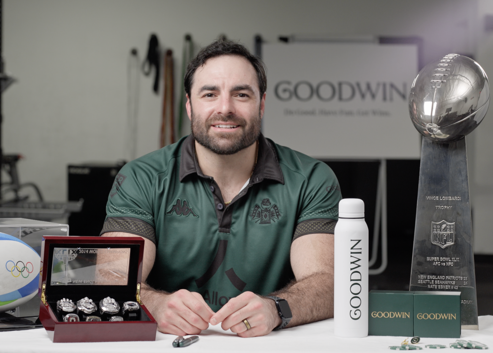
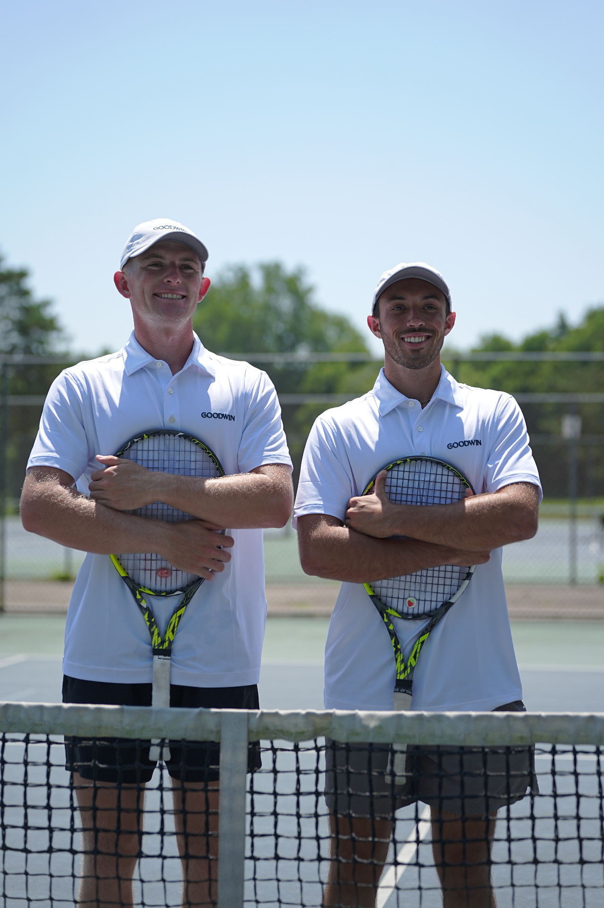

Champions across disciplines. United under one banner of relentless excellence.

Ultrarunner · Goodwin Generated Mission America
William Goodge
British ultrarunner, author of Rules for Running, and one of the most documented long-distance athletes of his generation. 3,011 miles across the United States in 55 days. 48 marathons across the UK in 30 days. 230 miles, non-stop, in a single effort.
He runs in memory of his mother, Amanda, who died of non-Hodgkin's lymphoma in 2018. Every project he takes on is a fundraiser. Every mile is a tribute.
Watch the video →
Heavyweight Boxing Legend
James "Buster" Douglas
Former Heavyweight Champion of the World. The man who delivered one of the most iconic upsets in sports history.
Watch the video →
NFL & Olympic Athlete
Nate Ebner
Three-time Super Bowl Champion with the New England Patriots. U.S. Olympic Rugby Sevens athlete at Rio 2016.
Watch the video →
USTA Doubles
Robert Cash & JJ Tracy
America's fastest-rising men's doubles team on the USTA circuit, redefining what a young partnership can achieve at the top level.
Watch the video →